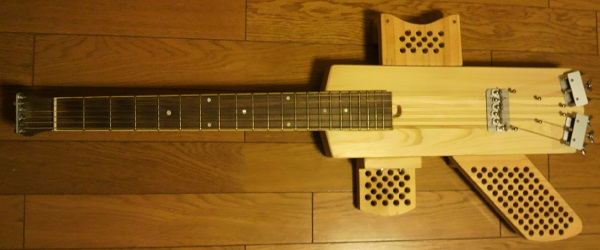
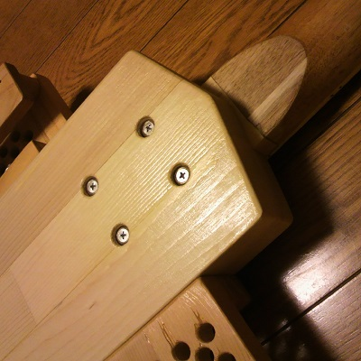
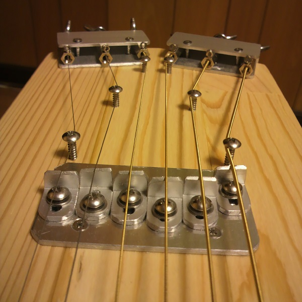
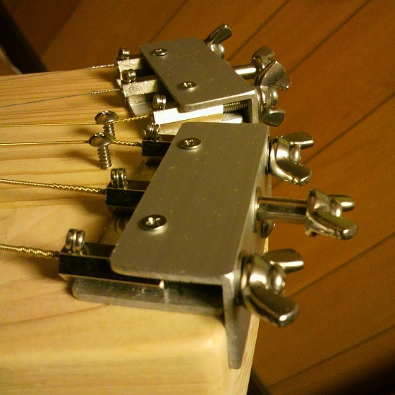

静音ギターの製作その2
2013年06月05日 カテゴリー：ギター関係
以前作った静音ギターですが、チューナー部分を自作するため、ボディ全体を作りなおしました。
 
だいぶボディが大きくなってしまいました。今回はボルトオンジョイントです。
 
チューナー部分はこんな感じです。M4ネジ、蝶ナット、高ナット、アルミ材を使っています。
参考サイト：Salty guitars
最初はローレットナットを使用してブリッジからチューナー部分までを直線にしようとしたのですが、アコギの場合は張力が強すぎてローレットナットを指で回すのは無理でした。蝶ナットであれば普通のペグのように問題なく回せるので、角度をつけてナットの間隔を22mmにしています。テフロンワッシャーをかませると摩擦が少しは軽減されるかもしれません。使用感は問題ないのですが、もう少し小型化できたらよいかな思います。